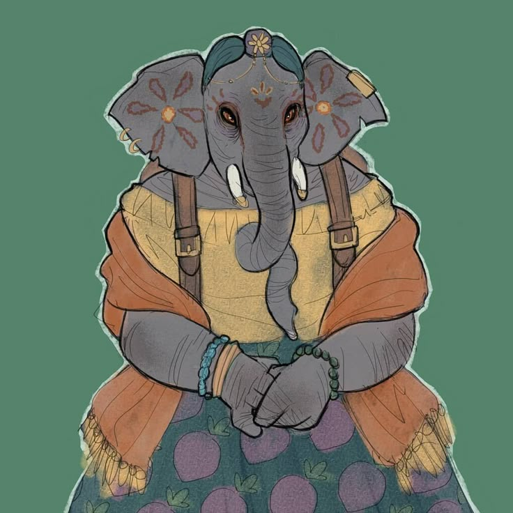
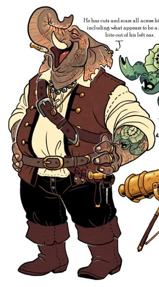
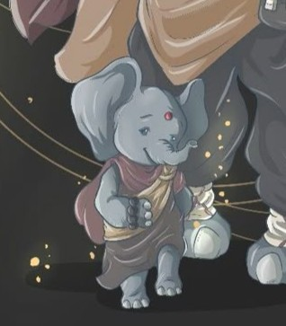

A Família Pecunia começou como simples cultivadores, muito antes de qualquer título chegar ao nome. Foi o encontro de seus antepassados com a Dinastia Fênix, ainda nos primeiros dias do reino, que mudou tudo: acolhidos pela coroa, receberam terras férteis e, com elas, a responsabilidade de manter o Reino Flutuante bem alimentado e abundante. Hoje, são os Pecunia quem sustentam a produção alimentícia em massa, a vigilância sanitária e o abastecimento das ilhas — o trabalho menos glamouroso da corte, e talvez o mais indispensável de todos.
✦ CHEFIA DO ABASTECIMENTO

✦ família pecunia
Emília Pecunia
Marquesa de [Inserir], Emília carrega mais de um século de colheitas nas costas — e a paciência para provar isso. É ela quem cuida da segurança alimentar do reino, da saúde ligada ao que se planta e se come, do abastecimento das ilhas e da regulamentação dos preços dos mantimentos. Onde outras famílias medem poder em ouro ou em exércitos, Emília sabe que nenhum dos dois importa muito para um povo com fome.

✦ família pecunia
Geraldo Pecunia
Duque de [Inserir] e a voz da família diante do trono, Geraldo é quem mantém a Rainha informada e quem negocia, pessoalmente, no grande salão real. Sua presença imponente — marcada por décadas de trabalho de campo antes de qualquer coroa — não passa despercebida em nenhuma sala que ele entra, e é justamente essa firmeza que faz até os cortesãos mais espinhosos pensarem duas vezes antes de tentar enganar os Pecunia.
✦ HERDEIRO

✦ família pecunia
Ulige Pecunia
Ainda uma criança para os padrões de sua raça, Ulige vive colado aos pais — especialmente a Geraldo, cujos passos ele segue por todo o palácio como se fossem a única direção que importa no mundo. Os grandes negócios da família ainda não fazem sentido para ele, mas o cheiro da colheita e a segurança de estar por perto de seus pais, sim.